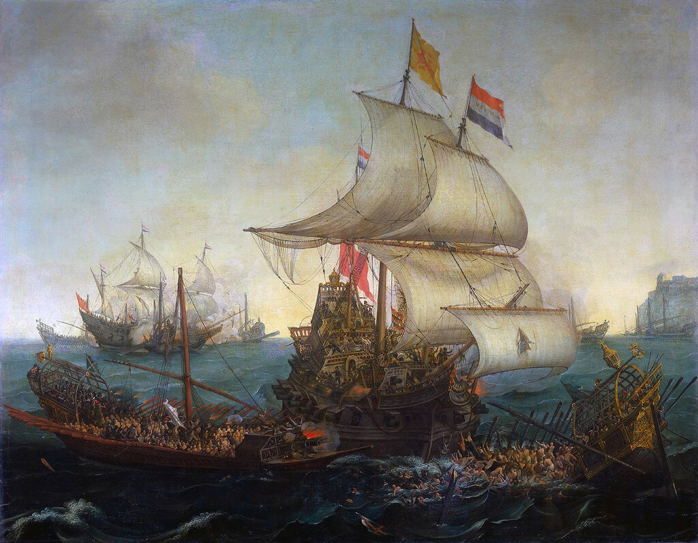
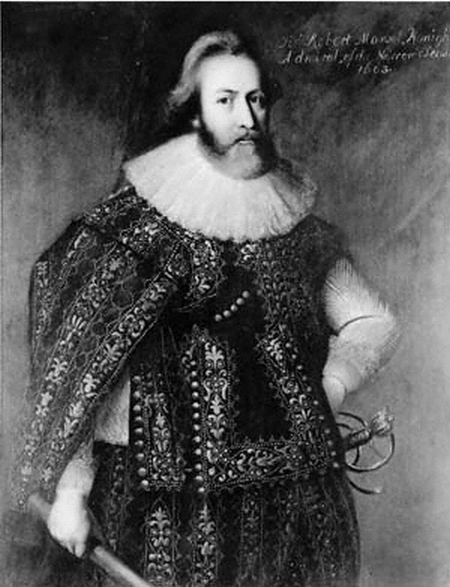
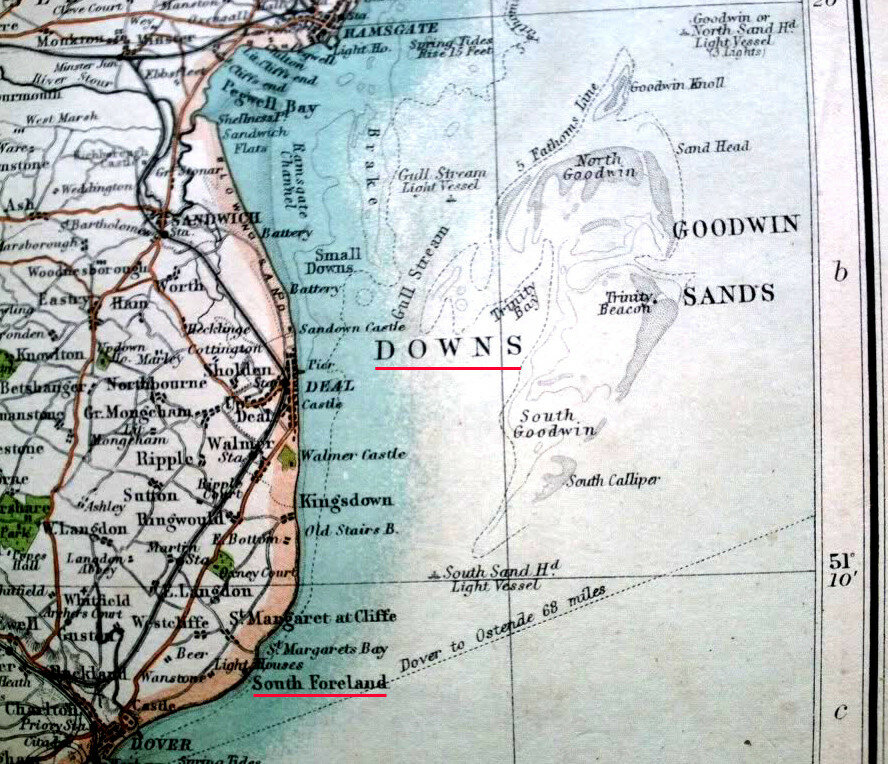
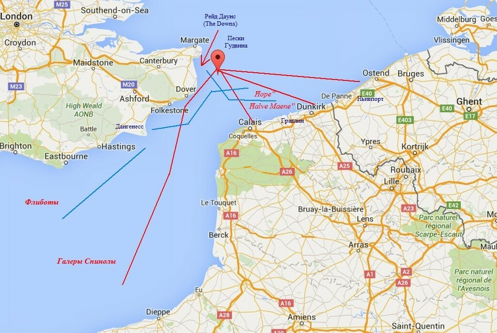
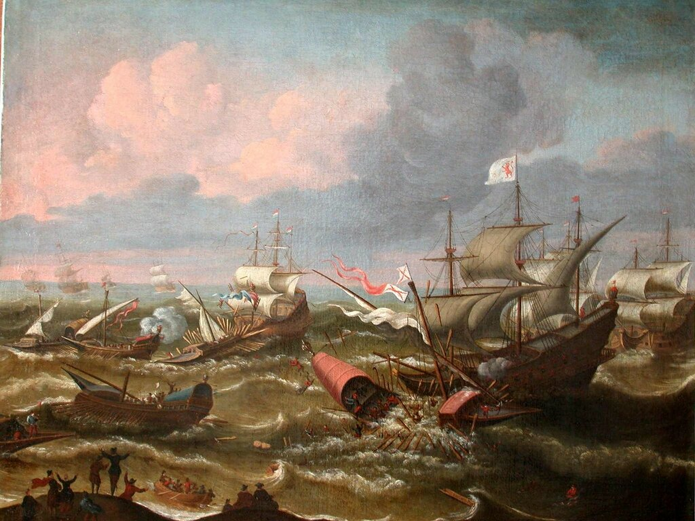
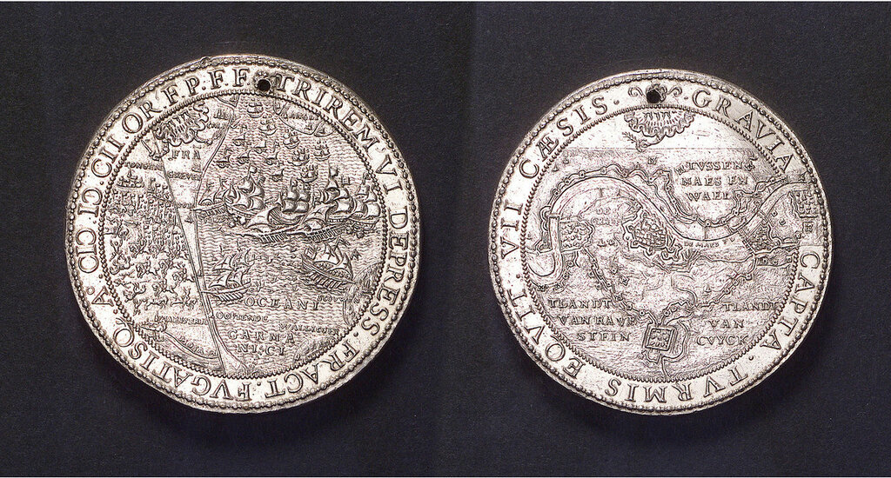

Голландские корабли, таранящие испанские галеры у побережья Фландрии в октябре 1602 года. Художник Hendrick Cornelisz Vroom (1617) Rijksmuseum Amsterdam
Бесславный для Федерико Спинолы бой в заливе Сезимбра стал самым продолжительным и самым упорным столкновением испанских галер с английскими парусными кораблями. Но он не остановил молодого генуэзца, и, добавив к своему грузу еще 36 сундуков с деньгами для армии Фландрии, Спинола повел галеры к английским проливам. У мыса Финистерре ему удалось даже захватить в качестве приза английское судно с боеприпасами, но вряд ли это могло утешить флотоводца. Более того, как покажет время, этот захват станет одной из последних морских побед Федерико.
Сделав остановку у Сантандера, Спинола погрузил на галеры еще 400 испанских пехотинцев, доведя терцию дона Хуана де Монесеса, размещенную на галерах, до 1600 человек. Тяжелый, как обычно, переход через Бискайский залив в данном случае осложнился попыткой мятежа среди морских пехотинцев. Мятежи такого рода были обычным явлением на испанском флоте, и Спинола без труда подавил его, но оптимизма это членам экспедиции не прибавило.
Дезинформация противника являлась одним из залогов успешного обеспечения похода, поэтому Спинола распространил слух, что отряд идет в устье Темзы для борьбы с английским флотом. Увы, вражеская разведка не дремала: корабли голландского адмирала Якоба ван Дювенворде (иногда его называют херр ван Обдам) отслеживали маршрут галер Спинолы, регулярно направляя посыльные суда с разведдонесениями англичанам в Портсмут. А 25 сентября информация поступила уже от сэра Уолтера Рэли, который зафиксировал проход галер мимо порта Лорьян.
Что в таких случаях должна делать королева Англии? Правильно, собирать тайный совет для оценки поступающей развединформации, что и случилось 30 сентября. Госсекретарь Сесил доложил, что Спинола и его галеры перемещаются вдоль побережья Франции, имея большой запас денег и 4000 солдат на борту. О размере войска Спинолы разведчики судили по количеству воды, которое загрузили галеры у французского берега. Королева поручила направить гонца в Портсмут с письмом к голландскому вице-адмиралу Яну Канту (Jan Adriaanszoon Cant) , заместителю командующего экспедиционной эскадры военно-морских сил Соединенных Провинций Якоба ван Дювенворде. Королева предлагала Канту направить четыре своих корабля в Дувр на помощь 29-летнему английскому вице-адмиралу Роберту Манселлу (тому самому, который прославился впоследствии своими успехами в стекольном деле, предложив использовать вместо древесного угля каменный; в морском деле крупными достижениями ни до, ни после описываемых событий замечен не был, возглавляемая им экспедиция против алжирских пиратов в 1621 году закончилась провалом)

Сэр Роберт Манселл (1571-1652), работа неизвестного художника. Иллюстрация из Оксфордского словаря национальных биографий.
Манселл командовал силами обороны Ла-Манша, которые в одиночку не могли воспрепятствовать прорыву Спинолы. Они включали старый (спущен в 1559 г.) 48-пушечный галеон Hope (600 тонн), 42-пушечный Victory и кромстеры Answer (200 тонн, 21 орудие) и Advantage (182 тонны, 18 орудий).
В ночь со 2 на 3 октября Кант и Манселл встретились в гавани Дувра и договорились о совместных действиях. Согласно выработанному плану, голландские корабли Samson и Halve Maene (в аглийской литературе он упоминается как Half Moon ) вместе с английским кромстером Answer и двумя голландскими флиботами должны занять позиции на рейде Даунс (The Downs - глубоководная якорная стоянка между Дувром и Маргейтом у побережья Кента Собственно, это глубоководный канал между кентским берегом и отмелью Пески Гудвина (Гудвин-Сэндз). Поэтому морское сражение, о котором сейчас пойдет речь, иногда называют Битвой при Гудвин-Сэндз.). Отряд под командованием Манселла – Hope, Advantage и два голландских дозорных флибота – будет находиться в районе мыса Дангенесс.

Район Песков Гудвина. Фото TowerWill
На рассвете 3 октября дозорные флиботы Манселла обнаружили шесть галер Спинолы, которые шли от Дьепа под парусами, пользуясь устойчивым зюйд-вестом. Голландцы пошли параллельным курсом, поддерживая с галерами зрительный контакт. В 8.00 их заметили и на галеоне Hope, однако классифицировать цели смогли лишь к 11.00.

Схема маневрирования кораблей в проливе Па-де-Кале, октябрь 1602 г.
Спинола хотел атаковать флиботы и захватить их, но появление мощного, хотя и старого, галеона Hope, устремившегося наперерез курсу галер, вынудило генуэзца отказаться от первоначальной затеи. Спинола изменил курс, перешел на весла и продолжил движение на северо-восток. Hope лавировал в пределах видимости, контролируя поведение и намерения галер. В это время Advantage прибыл на рейд Кале и передал сообщение о приближении противника командованию голландских сил в регионе, а это эскадра адмирала Гербрантсона, осуществлявшая блокаду Дюнкерка и 18 кораблей и две галеры в районе Слёйса. Манселл же, продолжая сопровождение галер на Хоупе, произвел несколько сигнальных выстрелов из погонных орудий для того, чтобы предупредить отряд, расположенный на рейде Даунса, о приближении противника.
Спинола принял неординарное решение и, вновь поставив на галерах паруса, прижался к мелководью у английского берега в районе Фолкстоуна. В 17.00 галеры были замечены с башен Дуврского замка. Перемещаясь вдоль берега, Спинола так близко подошел к мысу Саут-Форленд, расположенному в самой узкой части Па-де-Кале, что три галерных раба (испанец и два турка) смогли прыгнуть за борт и доплыть до берега.
Казалось, Федерико Спинола сумел оторваться от преследователей, однако Манселл на галеоне Hope упорно преследовал его. На закате английский адмирал увидел, что корабли эскадры на рейде Даунс подняли паруса и пошли наперерез галерам Спинолы. Манселл принял мудрое решение прекратить преследование генуэзца и направил свой галеон курсом ист-норд-ист к французскому берегу, предвидя, что эскадра из Даунса неминуемо отбросит Спинолу к Дюнкерку.
На южном фланге отряда кораблей из Даунса находился кромстер Answer. Он первым подошел на дистанцию выстрела и произвел два бортовых залпа по галерам. Тем временем подтянулись остальные корабли под командованием Канта.
Стемнело. Манселл дал команду капитану флагмана увалиться под ветер и направиться к южной оконечности Песков Гудвина, чтобы перехватить отряд Спинолы. Не прошло и четверти часа, как из ночного сумрака появилась первая галера отряда Спинолы San Felipe. Сам генуэзец шел на второй галере San Luis и находился в полной уверенности, что ему удалось оторваться от преследовавшей его эскадры Канта по меньшей мере на одну милю. Когда дистанция до галер сократилась до сотни ярдов, Манселл, как он писал позже,
«discharged about thirtie pieces of Ordinace of my lower and upper tyre at her alone, my selfe with many others in my ship saw when her maineyard was shot asunder, heard the report of many shot that hit her hull, heard many theirmost pitifull outcries ...»
«разрядил около тридцати орудий, расположенных на нижней и верхней палубах, по появившейся галере, после чего я, как и многие другие на нашем корабле, увидел, что рей на грот-мачте галеры разорвало пополам, услышал грохот от многочисленных попаданий ядер в ее корпус и истошные крики»
На борту флагманского корабля Манселла имелся специальный глашатай, знавший португальский язык, который стал предлагать пощаду морякам галеры в обмен на сдачу. Но как раз в этом момент из ночи вышли остальные пять испанских галер. Английский флагман лег на курс, который позволил избежать абордажа, и сделал около 50 выстрелов вслед уходящим галерам, не в силах преследовать их по мелководью Песков Гудвина.
Уже в третий раз за время похода Спинола сумел ускользнуть от преследователей, но его корабли оказались рассеяны по обширной акватории и у командующего не было возможностей собрать их вместе. Галера San Felipe имела тяжелые повреждения, гребцы до последней степени измождены после 24 часов непрерывной гребли. Ей удалось достичь побережья Франции в районе Гравлина, между Дюнкерком и Кале, но корабль Mackerel из голландской эскадры, осуществлявшей блокаду Дюнкерка, обнаружил галеру и произвел по ней бортовой залп своей артиллерии, в результате которого погибло 50 членов экипажа. На этом злоключения San Felipe не закончились. Вышедший в этот район Halve Maene, флагманский корабль эскадры Канта, протаранил галеру, лишив ее грот-мачты и кормовой надстройки. Потеряв плавучесть, галера San Felipe пошла ко дну.

Halve Maene таранит испанскую галеру. Полотно из коллекции Королевского Научного общества Зеландии. (Впрочем, есть мнение, что здесь изображены обстоятельсва боя при Слёйсе в мае 1603 года).
Еще один корабль эскадры Канта Samson в 22.00 заметил галеру Lucera и начал ее преследование, ведя огонь из носовых погонных орудий, догнал и протаранил. Голландский корабль потерял свой бушприт, но разрушил корму испанской галеры, лишив ее возможности управляться. Дело довершил подошедший на помощь Halve Maene, нанеся смертельный удар своим уже поврежденным от предыдущего тарана носом по корпусу галеры. Голландец остался наблюдать, как уходят под воду обломки Lucera; из 400 членов экипажа выжить удалось только 40 морякам.
В это время усилился ветер до штормового, и хотя голландские корабли продолжали вести огонь по появлявшимся из ночи тут и там испанским галерам, об организованном преследовании говорить уже не приходилось. Одна из наименее пострадавших испанских галер Padilla, проведя более суток в штормовом море, вышла к Кале, где села на мель. По французским законам экипаж был интернирован, рабы с галеры освобождены, а корпус ее разобран на дрова для отопления домов жителей города. Две другие испанские галеры San Juan и Hyacinth, взяв курс на северо-восток, вышли к берегу в 23.00 4 октября значительно севернее Дюнкерка, в районе Ньивпорта.
Флагманская галера экспедиции Спинолы San Luis дошла до пункта назначения без повреждений. Федерико пообещал всем 250 гребцам галеры свободу, и выбросив за борт весь груз, кроме 36 сундуков с деньгами, благополучно достиг Дюнкерка.
В итоге Спинола потерял за переход три галеры и около 2000 человек личного состава. Потери англичан и голландцев были незначительны, из кораблей пострадали лишь Halve Maene и Samson, предпринявшие таран галер противника.
Что мне пока не удалось выяснить? Ясно, что основные события развернулись в темное время суток, около полуночи. Однако одни авторы пишут, что это было при лунном свете (moonlight), другие – безлунной ночью (moonless night).
В память о сражении в проливе Па-де-Кале была выбита памятная медаль (National Maritime Museum, Greenwich, London)

Завершим тему о галерах Спинолы в следующий раз.